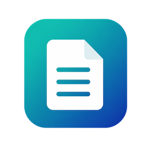

Apps / Item Hints

Item Hints
Help for the Microsoft Dynamics 365 Business Central app
What Item Hints does
Item Hints lets you attach short notes to items, such as handling instructions or ordering reminders. The hints appear when people work with the item on sales and purchase documents, so the right information shows up at the right moment.
Add a hint
- Open the item card for the item.
- Choose Related, then Item Hints.
- Enter the hint text, and choose where and how it should appear.
An item can have as many hints as you need.
Hint settings
- Hint
- The text people see. Up to 250 characters.
- Applies To
- Whether the hint is shown on sales documents, purchase documents, or both.
- Show As
- Whether the hint is shown in the Item Hints FactBox, as a notification when someone enters the item on a line, or both.
- Starting Date and Ending Date
- Optional. Use them for temporary hints, such as a delivery delay. Leave both blank to show the hint all the time. The dates are compared with the work date.
Where hints appear
- Item card: the Item Hints FactBox shows the item's active hints.
- Sales orders and purchase orders: the Item Hints FactBox shows the hints for the item on the selected line.
- Sales and purchase lines: a notification appears when someone enters the item on a line on a sales or purchase document.
Notifications only appear when a person enters the item. Lines created in the background, for example by copying a document or through an API, don't trigger them.
Permissions
- Item Hints - Edit
- For people who create and maintain hints.
- Item Hints - Read
- For people who only need to see hints, such as order takers and buyers.
Requirements
Microsoft Dynamics 365 Business Central online, version 27 or later.
Support
Email soren@friis.io. Please include your Business Central version and a short description of the issue.
See also the privacy policy and the end user license agreement.